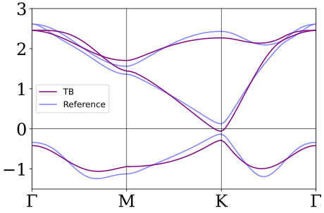
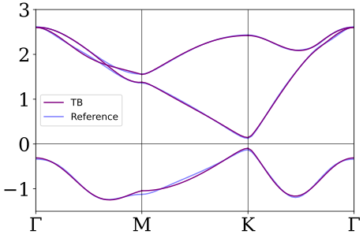
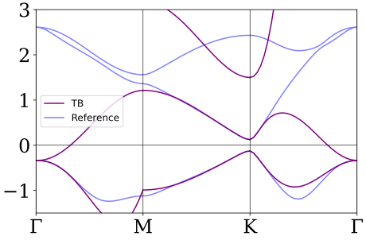
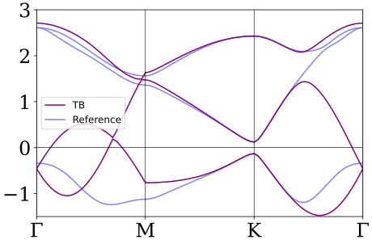

本页是未发布的拟合接口草稿，暂不列入帮助主页和 Guide 的正式入口。This is an unpublished fitting-API draft and is not linked from the help home or Guide.
Tutorial · examples 1–2
读取并检查三条 VASP 能带Read and inspect three VASP bands
Python 负责输入与返回对象；解析、Hamiltonian 求值和拟合都由 Rust 完成。
Python supplies the inputs and result objects; parsing, Hamiltonian evaluation, and fitting run in Rust.
Example 1 · import
# 导入精确数、建模、VASP 读取和拟合入口# Import exact-number, modeling, VASP-reading, and fitting APIs from fractions import Fraction from magnetictb import ( compareBand, fittingTB, gray, hamiltonian_object, init, msgop, sqrt, symbol, vaspEig, )
MagneticTB import: OK
Input 2 · EIGENVAL
# 读取 EIGENVAL 的第 21–23 条能带并检查记录# Read bands 21–23 from EIGENVAL and inspect the records eigenval_file = "/path/to/EIGENVAL" vasp_bands = vaspEig(eigenval_file, -0.0072, 1, 21, 23) print(len(vasp_bands), vasp_bands[0], vasp_bands[59])
90 [[0.0, 0.0, 0.0], [-0.337773, 2.612089, 2.612105]] [[0.3333333, 0.3333333, 0.0], [-0.127918, 0.126005, 2.431383]]
没有 EIGENVAL 文件？使用本例数据No EIGENVAL file? Use the example data
下载参考数据到当前工作目录，用下面代码替代上面的文件读取。数据包含本例使用的 90 个 k 点及三条能带。
Download the reference data to your working directory and use this code instead of the file-reading code above. It contains this example’s 90 k points and three bands.
# 读取随教程提供的参考能带，供下面各个拟合例子使用# Load the tutorial reference bands for the fitting examples below import json with open("compareband-reference.json", encoding="utf-8") as stream: vasp_bands = json.load(stream)["records"]
本页没有匹配章节。No section on this page matched.
Input 3
建立三轨道拟合模型Build the three-orbital fitting model
# 初始化三轨道模型，组合两个键层并设置拟合初值# Initialize the three-orbital model, combine two shells, and set initial fit values a, c = symbol("a"), symbol("c") init( lattice=((a, 0, 0), (-a / 2, sqrt(3) * a / 2, 0), (0, 0, c)), lattpar=(("a", 1), ("c", 10)), wyckoffposition=(((Fraction(2, 3), Fraction(1, 3), 0), (0, 0, 0)),), symminformation=msgop(gray[156])[:6], basisFunctions=(("dz2", "dxy", "dx2-y2"),), InitialBondShells=3, GenerateSymmetryGroup=True, ) fitting_hamiltonian = hamiltonian_object(1) + hamiltonian_object(2) fitting_path = ( (((0, 0, 0), (Fraction(1, 2), 0, 0)), ("Γ", "M")), (((Fraction(1, 2), 0, 0), (Fraction(1, 3), Fraction(1, 3), 0)), ("M", "K")), (((Fraction(1, 3), Fraction(1, 3), 0), (0, 0, 0)), ("K", "Γ")), ) initial = { "e1": 0.915, "e2": 0.685, "t1": 0.1, "t2": 0.09, "t3": 0.1, "t4": -0.38, "t5": 0.34, "t6": 0.245, "t7": 0.565, "t8": 0.305, "t9": 0.365, } print(fitting_hamiltonian.shape) print(fitting_hamiltonian.parameter_names)
Magnetic space group (BNS): [156, 50]
Lattice: HexagonalP
Generators: [('"1"','F'), ('"3z"','F'), ('"3z-1"','F'),
('"mx"','F'), ('"mxy"','F'), ('"my"','F')]
(3, 3)
('e1', 'e2', 't1', 't2', 't3', 't4', 't5', 't6', 't7', 't8', 't9')Input 4
最近邻拟合与能带对比Nearest-neighbour fit and comparison
# 拟合最近邻模型，并返回与参考数据的能带对比# Fit the nearest-neighbour model and compare its bands with the reference data nearest_fit = fittingTB( fitting_hamiltonian, vasp_bands, list(range(1, len(vasp_bands) + 1)), initial, ) nearest_comparison = compareBand( fitting_path, 30, fitting_hamiltonian, dict(nearest_fit.fitted_parameters), vasp_bands, plotRange=(-1.5, 3), ) print(nearest_fit.converged, nearest_fit.iterations) print(nearest_fit.initial_loss, nearest_fit.fitted_loss) print(len(nearest_comparison.model.eigenvalues), len(nearest_comparison.reference_bands)) print(nearest_comparison.model.eigenvalues[0]) print(nearest_comparison.reference_bands[0]) # 保存能带对比图；交互显示可用 nearest_comparison.show()# Save the band comparison; use nearest_comparison.show() for interactive display nearest_comparison.savefig("bandfitting-nearest.svg")
True 13 143.1410875648821 3.6813037963888706 93 90 (-0.41620768255750884, 2.4537921207343953, 2.4537921207343953) (-0.337773, 2.612089, 2.612105)
{kind=link}

compareBand(...).savefig(...) 生成。紫色为 TB，浅蓝色为参考能带；能量单位为 eV。Nearest-neighbour fit, generated by compareBand(...).savefig(...) using this example’s saved parameters. Purple: TB; light blue: reference bands. Energies are in eV.模型每段包含两端点，所以 3×31=93 点；VASP 文件每段 30 点，共 90 点。两组数据绘制在同一路径横坐标上。
The model includes both endpoints of each segment, giving 3×31=93 points; the VASP file has 30 records per segment, or 90 total. Both are plotted on the same path coordinate.
不重新拟合，只重画这张图Redraw this figure without refitting
先执行上面的导入与模型代码，并下载参考数据到当前工作目录。下列参数与 fittingTB 示例的保存结果相同，不需要运行优化器。
Run the imports and model code above, then download the reference data to your working directory. These parameters match the saved fittingTB example result; no optimizer run is needed.
# 读取本例的参考能带，直接使用保存的最近邻参数# Load this example’s reference bands and reuse the saved nearest-neighbour parameters import json with open("compareband-reference.json", encoding="utf-8") as stream: vasp_bands = json.load(stream)["records"] saved_nearest_parameters = { "e1": -0.178810705201303, "e2": 1.4791055401880806, "t1": -0.03956616289270096, "t2": -0.08646977730344792, "t3": -0.12609189892787226, "t4": 0.3752021134889403, "t5": 0.3652457747928622, "t6": 0.23148554072858285, "t7": -0.015791860765235078, "t8": 0.19415587636289922, "t9": -0.003933982373039839, } # compareBand 计算能带，返回对象的 savefig 方法生成图片# compareBand evaluates the bands; the returned object’s savefig method generates the image nearest_comparison = compareBand( fitting_path, 30, fitting_hamiltonian, saved_nearest_parameters, vasp_bands, plotRange=(-1.5, 3), ) nearest_comparison.savefig("bandfitting-nearest.svg")
Input 5
加入第二近邻Add second neighbours
# 加入第二近邻参数，继续拟合并比较能带# Add second-neighbour parameters, continue fitting, and compare the bands second_hamiltonian = fitting_hamiltonian + hamiltonian_object(3) second_initial = dict(nearest_fit.fitted_parameters) second_initial.update({f"r{i}": 0.0 for i in range(1, 11)}) second_fit = fittingTB( second_hamiltonian, vasp_bands, list(range(1, 91)), second_initial, ) second_comparison = compareBand( fitting_path, 30, second_hamiltonian, dict(second_fit.fitted_parameters), vasp_bands, plotRange=(-1.5, 3), ) print(second_fit.converged, second_fit.iterations) print(second_fit.initial_loss, second_fit.fitted_loss) print(second_comparison.model.eigenvalues[0]) print(second_comparison.model.eigenvalues[60]) # 保存加入第二近邻后的能带对比图；交互显示可用 second_comparison.show()# Save the second-neighbour comparison; use second_comparison.show() for interactive display second_comparison.savefig("compareband-full.svg")
True 32 3.6813037963888706 0.13036395929362382 (-0.30885635496703756, 2.6028739005231274, 2.6028739005231274) (-0.10881749148798939, 0.15671209576878298, 2.419268293156152)
{kind=link}

compareBand 实际输出。紫色为 TB，浅蓝色为参考能带，坐标范围与上一张图相同。Second-neighbour fit: actual compareBand output for this example’s saved parameters. Purple: TB; light blue: reference bands. Axis limits match the preceding figure.只需重画时，可使用 compareBand 页面提供的完整保存参数与绘图代码，无需重新拟合。
To redraw without refitting, use the complete saved parameters and plotting code on the compareBand page.
Inputs 6–7
限制能窗或 K 点邻域Restrict the energy window or K neighbourhood
Input 6 · EnergyWindow
# 限制拟合能量窗口，并检查优化结果# Restrict the fitting energy window and inspect the optimization result fermi_fit = fittingTB( fitting_hamiltonian, vasp_bands, list(range(1, 91)), initial, EnergyWindow=(-0.5, 0.5), ) fermi_comparison = compareBand( fitting_path, 30, fitting_hamiltonian, dict(fermi_fit.fitted_parameters), vasp_bands, plotRange=(-1.5, 3), ) print(fermi_fit.converged, fermi_fit.iterations) print(fermi_fit.initial_loss, fermi_fit.fitted_loss) print(len(fermi_fit.used_k_point_indices), fermi_fit.residual_count) print(fermi_comparison.model.eigenvalues[60]) # 保存本次能窗拟合的能带图；交互显示可用 fermi_comparison.show()# Save the energy-window fit plot; use fermi_comparison.show() for interactive display fermi_comparison.savefig("bandfitting-energy-window.svg")
True 24 16.772988964303096 0.00017166800200888645 28 41 (-0.13931254335422114, 0.13763489474515225, 1.5049173141544039)
{kind=link}

fermi_comparison.savefig(...) 的实际输出。仅用 −0.5 到 0.5 eV 内的参考能量拟合；图中仍展示完整路径与较宽能区，窗外能带不保证吻合。紫色为 TB，浅蓝色为参考能带。Actual output from fermi_comparison.savefig(...). Only reference energies from −0.5 to 0.5 eV enter the fit. The plot still shows the full path and a wider energy range; agreement outside the fitted window is not guaranteed. Purple: TB; light blue: reference bands.Input 7 · KPointNeighborhood
# 限制拟合的 k 点邻域，并检查优化结果# Restrict the fitted k-point neighborhoods and inspect the optimization result k_fit = fittingTB( fitting_hamiltonian, vasp_bands, list(range(1, 91)), initial, KPointNeighborhood={ "Center": (Fraction(1, 3), Fraction(1, 3), 0), "Radius": 0.15, "Periodic": True, }, ) # 使用这次 K 邻域拟合的参数，绘制完整路径以比较邻域内外的效果# Plot the full path with this K-neighbourhood fit’s parameters to compare behaviour inside and outside the fitted region k_comparison = compareBand( fitting_path, 30, fitting_hamiltonian, dict(k_fit.fitted_parameters), vasp_bands, plotRange=(-1.5, 3), ) print(k_fit.converged, k_fit.iterations) print(k_fit.initial_loss, k_fit.fitted_loss) print(k_fit.used_k_point_indices) print(k_fit.comparison.fitted_bands[0]) print(k_fit.comparison.reference_bands[0]) # 保存 K 邻域拟合的能带图；交互显示可用 k_comparison.show()# Save the K-neighbourhood fit plot; use k_comparison.show() for interactive display k_comparison.savefig("bandfitting-k-neighborhood.svg")
True 20 29.378270550141963 0.0024843950327300217 (49, 50, 51, 52, 53, 54, 55, 56, 57, 58, 59, 60, 61, 62, 63, 64, 65, 66, 67, 68, 69, 70) (-0.5253262755254161, 0.6362529410871435, 2.278716163645225) (-0.54489, 0.619663, 2.26239)
{kind=link}

k_comparison.savefig(...) 的实际输出。拟合只使用 K 点邻域选中的参考记录；图中画出完整路径，便于同时检查邻域外的偏差。紫色为 TB，浅蓝色为参考能带。Actual output from k_comparison.savefig(...). The fit uses only the selected reference records near K; plotting the full path also exposes deviations outside that neighbourhood. Purple: TB; light blue: reference bands.